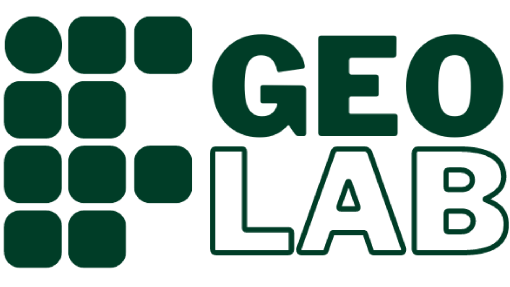

<script src="https://cdn.jsdelivr.net/npm/sweetalert2@11"></script>

<button id="showAlertButton">Mostrar Alerta</button>

<style>
    /* Customizando o popup */
    .swal2-popup.custom-popup {
        border-radius: 20px;
        box-shadow: 0 4px 20px rgba(0, 0, 0, 0.2);
        text-align: center;
        display: flex;
        flex-direction: column;
        justify-content: space-between;
        min-height: 250px;  /* Altura mínima para o alerta */
    }

    /* Estilo da imagem do usuário que ficará na parte superior */
    .swal2-image.custom-image {
        position: relative;
        margin-bottom: 20px;
        border-radius: 50%;
        box-shadow: 0 4px 15px rgba(0, 0, 0, 0.2);
    }

    /* Estilo do título */
    .swal2-title.custom-title {
        font-size: 22px;
        font-weight: bold;
        margin-bottom: 15px;
    }

    /* Estilo do conteúdo */
    .swal2-content.custom-content {
        font-size: 16px;
        color: #ffffff;
        margin-bottom: 20px;
    }

    /* Customizando o botão OK */
    .swal2-confirm.custom-button {
        background-color: #3a5a40;
        color: white;
        padding: 10px 20px;
        border-radius: 10px;
        box-shadow: 0 4px 10px rgba(0, 0, 0, 0.2);
        margin-top: auto;  /* Garantir que o botão fique no final */
    }

    /* Customizando a imagem do logo no footer */
    .swal2-popup.custom-popup .custom-footer-image {
        text-align: center;
        margin-top: auto;  /* Garante que a imagem fique no final */
    }

    /* Estilo da imagem do logo no footer */
    .swal2-popup.custom-popup .custom-footer-image img {
        width: 100px;  /* Largura do logo */
        height: auto;  /* Mantém a proporção */
    }
</style>

<script>
    document.getElementById('showAlertButton').addEventListener('click', function () {
        const img = "usuario.png";  // Substitua pelo caminho real da sua imagem

        Swal.fire({
            title: 'Seja bem-vindo Lorenzo!',
            imageUrl: 'img/usuarios/' + img,
            imageWidth: 150,
            imageHeight: 150,
            imageAlt: 'User Image',
            background: '#3A5A40',
            color: '#ffffff',
            confirmButtonText: 'OK',
            confirmButtonColor: '#3a5a40',
            showConfirmButton: false,
            customClass: {
                popup: 'custom-popup',
                image: 'custom-image',
                title: 'custom-title',
                content: 'custom-content',
                confirmButton: 'custom-button',
            },
            html: '<div class="custom-footer-image"></div>'  // Imagem do logo no final
        });
    });
</script>
